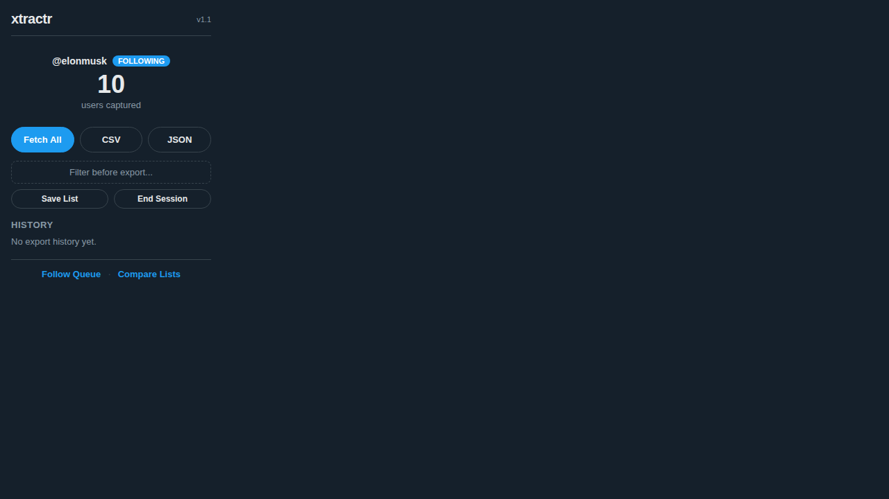
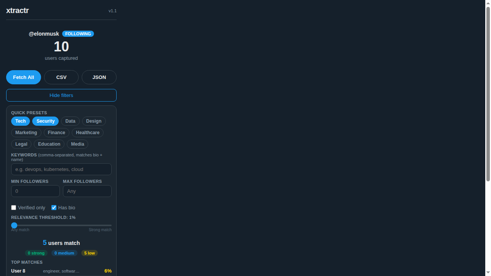
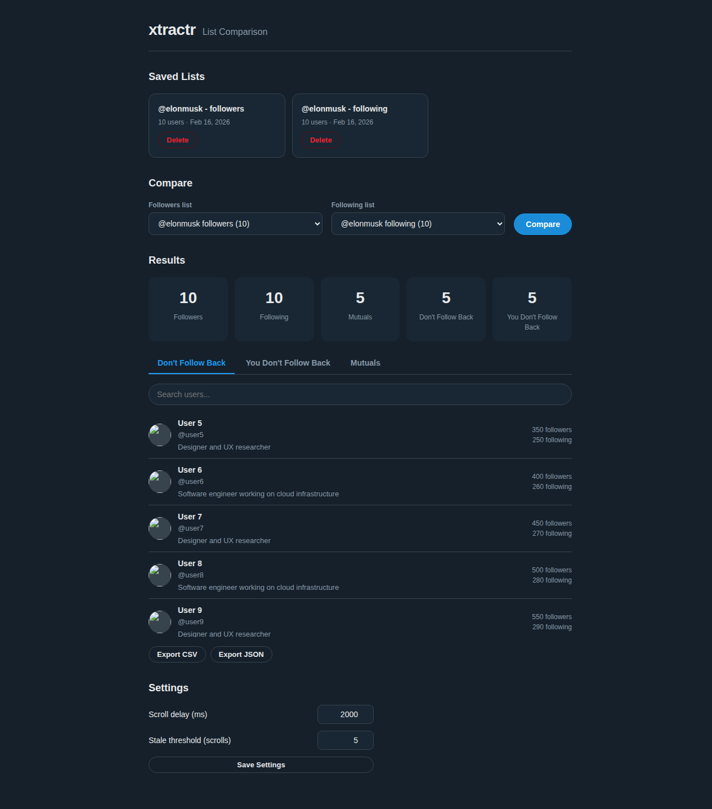

Chrome extension that captures X/Twitter follower data, filters by relevance, and bulk-follows from your exports — all without API keys.
Features
Visit any profile's followers or following page and xtractr starts collecting automatically. Paginate through entire lists with built-in rate-limit handling, then export to CSV or JSON.
Filter by keywords with stemming, follower count ranges, verified status, and bio presence. Each user gets a 0–100 relevance score. Industry presets for IT, Cybersecurity, Data, and Design.
Save multiple lists and compare them side by side. Find mutuals, people who don't follow back, and accounts you don't follow back — then export or act on the results.
Send filtered users to a review queue. See profile cards with bios, follower counts, and relevance scores. Open profiles and follow with keyboard shortcuts — F to follow, S to skip.
Export a filtered list from xtractr, then run the auto-follow script. It drives your real Chrome browser — same cookies, same session. X sees normal browsing, not an API bot.
node scripts/auto-follow.mjs list.json
In action



How it works
Browse any followers or following page on X. xtractr intercepts the data your browser already loads — no extra API calls.
Apply keyword filters, industry presets, and relevance scoring. Export the filtered list as JSON for automation or CSV for analysis.
Run the Playwright script with your export. It opens Chrome with your session and follows each profile at a human pace.
Free, open source, fully local. No API keys, no subscriptions.